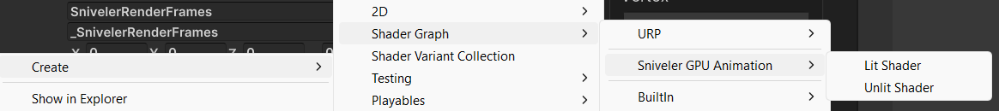
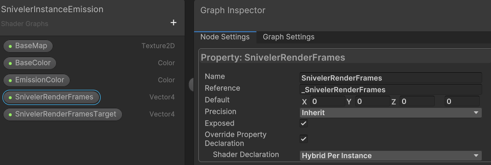
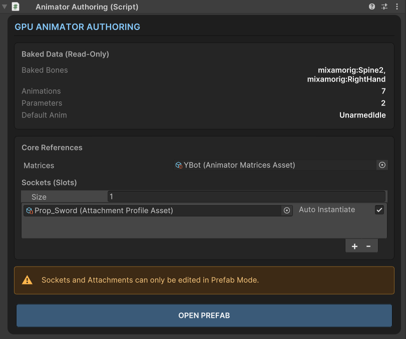
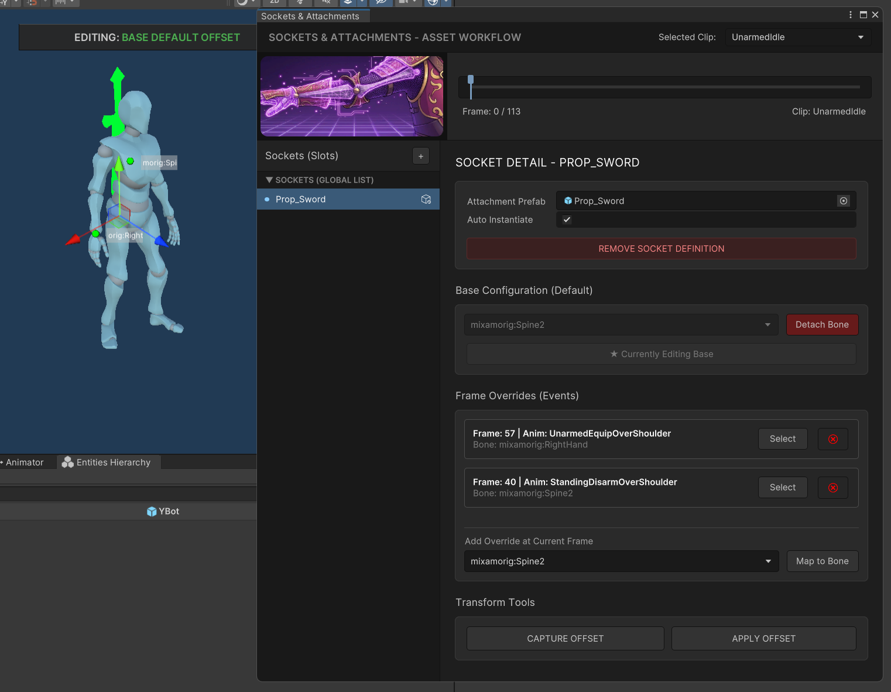
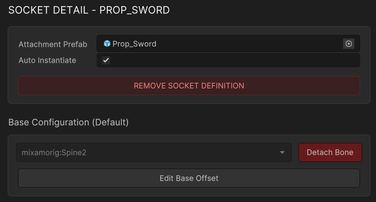
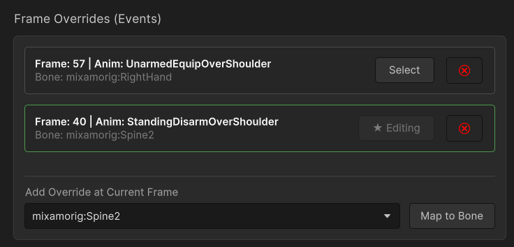
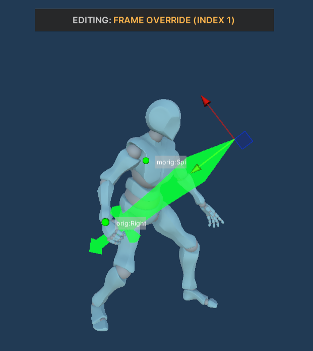
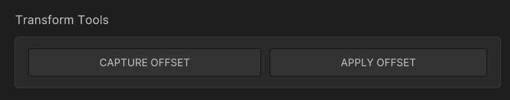
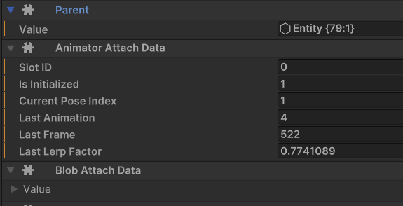

👋 Introduction & Overview
This asset is a high-performance, strictly DOTS/ECS-driven animation system designed for the Universal Render Pipeline (URP). It bypasses traditional CPU animation bottlenecks by baking skeletal data into highly optimized BlobAssets and performing matrix/Dual Quaternion skinning directly inside the Vertex Shader.
Whether you are building a massive RTS, a factory automation game, or a swarm-survival (Vampire Survivors-like) project, this tool allows you to render 10,000+ animated units on screen with zero CPU overhead.
✨ Core Features
- ⚔️ Zero-Latency Sockets (Attachments)
Unlike traditional GPU skinning solutions where attachments lag by a frame, our system uses synchronous Burst-compiledBlobAssetqueries. You can attach weapons, armor, or VFX to specific bones, and they will follow the animation with frame-perfect precision. - 🎨 Full Shader Graph Support
Don't limit yourself to standard shaders. We provide out-of-the-box Shader Graph templates. Add dissolve effects, outlines, or custom emission logic to your animated crowds in seconds. - 🦾 Dual Quaternion Skinning (DQS)
Say goodbye to the "candy-wrapper" effect where joints (like shoulders and knees) lose volume during extreme bending. DQS preserves mesh volume, drastically improving the visual fidelity of low-poly and stylized characters. - ⚙️ One-Click Automated Baking
No complex setup. Drag your standard UnityGameObject(with aSkinnedMeshRendererand Animator) into our custom Editor Window, click "Bake", and receive a fully configured DOTS Prefab ready to be spawned via ECS. - 🚀 Extreme Performance & LODs
Built-in support for Unity'sLODGroup. The system automatically drops bone influences (4 bones -> 2 bones -> 1 bone) and disables interpolation for distant units and shadow casters to save ALU instructions. Includes distance-based Tick-Rate optimization (animating at 30fps or 15fps for distant crowds).
🛠️ Technical Requirements
To use this asset, your project must meet the following minimum requirements:
| Requirement | Supported Version | Notes |
|---|---|---|
| Unity Engine | 2022.2 or higher | Tested up to Unity 6. |
| Render Pipeline | URP 14.0+ | HDRP and Built-in RP are not supported. |
| Entities (DOTS) | 1.4.5 or higher | Requires com.unity.entities. |
| Entities Graphics | 1.4.18 or higher | Requires com.unity.entities.graphics. |
| Burst Compiler | 1.8.27 or higher | Required for high-performance jobs. |
💡 Note: The asset relies strictly on the ECS paradigm. It does not use traditional
GameObjectsfor runtime rendering. You must be familiar with spawning and managing entities viaEntityCommandBufferor Bakers.
⚠️ Known Limitations
Because this system is built for maximum performance at massive scales, it relies on pre-computed (baked) data. Please be aware of the following architectural limitations:
🛑 Important Limitations
- No Runtime IK: Inverse Kinematics (like procedural foot placement or aiming) is not supported, as the bone matrices are baked into static arrays.
- No Ragdolls: Physics-driven ragdolls cannot be applied to the GPU-skinned meshes.
- Memory Footprint: Animation data is baked per-frame, per-bone. While highly optimized, baking 50+ long animations for a character with 100+ bones will consume noticeable VRAM/RAM.
⚙️ 2. Installation & Setup
Getting started with GPU Animation Entities PRO requires a specific Unity environment, as the asset relies heavily on the Data-Oriented Technology Stack (DOTS) and the Universal Render Pipeline (URP).
Follow this step-by-step guide carefully to ensure your project is configured correctly. Missing the URP configuration steps is the #1 cause of invisible meshes!
📦 Prerequisites
Before importing the asset, ensure your Unity project meets the following baseline requirements:
- Unity Version: 2022.2 or newer (Unity 6 is fully supported).
- Render Pipeline: Universal Render Pipeline (URP 14.0+).
- Scripting Backend: IL2CPP (Recommended for final builds) / Mono (Editor).
Step 1: Install Required Dependencies
Since this is a strict ECS asset, you must install the official Unity DOTS packages.
- Open your Unity project.
- Navigate to Window > Package Manager.
- Click the + icon in the top left corner and select "Add package by name...".
- Add the following packages one by one:
com.unity.entities(Version 1.4.5+)com.unity.entities.graphics(Version 1.4.18+)com.unity.burst(Version 1.8.27+)
💡 Tip: If you are starting a fresh project, the easiest way to get all dependencies is to create a new project using the "3D (URP) Core" template, and then install the Entities packages.
Step 2: Import the Asset
Once the dependencies are resolved:
- Open the Window > Package Manager.
- Select My Assets from the dropdown.
- Search for GPU Animation Entities PRO.
- Click Download, then Import.
- Ensure all folders (especially Editor, Runtime, and Samples~) are checked, and click Import.
Step 3: URP Configuration (🚨 CRITICAL)
For the GPU skinning to work, the Universal Render Pipeline must be allowed to pass DOTS data to the GPU. If you skip this step, your animated characters will be invisible.
- Locate your active URP Asset in the Project window (usually found in Assets/Settings/ or similar).
- Select the URP Asset to view it in the Inspector.
- Scroll down to the Advanced section.
- Ensure the following settings are ENABLED (Checked):
- ✅ SRP Batcher
- ✅ DOTS Instancing (This is mandatory for
_SnivelerRenderFramesto reach the shader).
🛑 Troubleshooting: If you cannot find the "DOTS Instancing" checkbox, ensure that the
com.unity.entities.graphicspackage is successfully installed and compiled.
Step 4: Burst Compiler Settings
To achieve maximum performance, ensure the Burst compiler is active.
- Go to Jobs > Burst > Enable Compilation (Ensure it has a checkmark).
- Go to Jobs > Burst > Synchronous Compilation (Optional, but recommended during Editor playback to prevent initial stuttering).
Step 5: Explore the Demo Scenes
The best way to verify your installation and learn the system is to explore the provided demo scenes. Navigate to the Samples~ folder (you may need to copy it into your Assets folder if Unity imported it as a hidden package sample).
We have provided three distinct environments:
- 🟢 DemoZone 1 (Basics):
Located inDemoZone1/Scenes/Landing.unity. Demonstrates basic baking, simple movement, and parameter changing (Speed, Attack triggers) via UI. - ⚔️ DemoZone 2 (Sockets & Weapons):
Located inDemoZone2/Scenes/Landing.unity. Showcases the Zero-Latency Socket System. Watch how the character smoothly equips and unequips a sword and an axe with perfect frame synchronization. - 🏰 DemoZone 3 (Massive Crowd & RTS Logic):
Located inDemoZone3/Scenes/Landing.unity. The ultimate stress test. Features spatial hashing, combat decision-making, ranged projectiles, and thousands of units fighting simultaneously.
🚀 3. Quick Start Guide (Your First 10,000 Units)
In this guide, we will take a standard Unity character, convert it into a highly optimized DOTS Prefab using the Animator Baker, and write a simple ECS script to spawn thousands of instances on the screen.
By the end of this 5-minute tutorial, you will have a massive, fully animated crowd running at maximum FPS.
Step 1: Prepare Your Source Character
Before we can bake anything, we need a standard Unity GameObject set up correctly.
- Drag your character model (FBX) into a standard Unity Scene.
- Ensure the
GameObjecthas aSkinnedMeshRenderer. - Ensure it has an Animator component with a valid Animator Controller assigned.
- (Optional but Highly Recommended) Add an
LODGroupcomponent and set up your LODs. The Baker will automatically read this and generate optimized DOTS LODs!
💡 Tip: Make sure your Animator Controller has at least one animation state (e.g., "Idle" or "Run"). The Baker will read all states directly from this controller.
Step 2: Bake the DOTS Prefab
Now we will convert this standard GameObject into a GPU-driven DOTS Prefab.
- Open the Baker window via Window > Sniveler Code > Animator Baker.
- Drag your character
GameObjectfrom the scene into the Prefab Model field. - The window will populate with three tabs:
Animator,Lods, andBones. - In the
Lodstab, ensure the Shader is set to Sniveler Lit (or Sniveler Unlit). - Click the big green Process button at the bottom.
What just happened?
The system played through all your animations, extracted the bone matrices, and saved them into highly optimized BlobAssets.
You will find your new ready-to-use DOTS Prefab in your Project window under:Assets/SnivelerCode/GpuAnimation/Generated/[YourCharacterName]/Character
Step 3: The Scene Renderer (🚨 CRITICAL STEP)
For the GPU to know how to animate your characters, the baked animation matrices must be uploaded to the video card's memory (GraphicsBuffer). We do this using a special scene component.
- Create a
SubScenein your project (Right-click in Hierarchy > New Sub Scene > Empty Scene). - Inside this
SubScene, create an EmptyGameObjectand name itGPU_Animation_Renderer. - Add the
AnimatorRendererAuthoringcomponent to it. - In the Animators array of this component, click + and assign your newly baked DOTS Prefab.
🛑 Warning: If you skip this step, your spawned entities will not animate, or they might disappear entirely! This component is responsible for generating the
SceneAnimatorConfigDatathat links your entities to the GPU buffers.
Step 4: Spawning the Crowd (C# Script)
Now let's write a simple ECS script to spawn a massive grid of our characters.
Create a new C# script named CrowdSpawnerAuthoring.cs and paste the following code:
using SnivelerCode.GpuAnimation.Runtime.Components;
using Unity.Entities;
using Unity.Mathematics;
using Unity.Transforms;
using UnityEngine;
namespace SnivelerCode.GpuAnimation.Tutorial
{
// 1. The Component Data (No prefab field needed here!)
public struct CrowdSpawnerData : IComponentData
{
public int GridSize;
public float Spacing;
public bool IsSpawned;
}
// 2. The Authoring Component
public class CrowdSpawnerAuthoring : MonoBehaviour
{
public int GridSize = 100; // 100x100 = 10,000 units!
public float Spacing = 1.5f;
class Baker : Baker<CrowdSpawnerAuthoring>
{
public override void Bake(CrowdSpawnerAuthoring authoring)
{
var entity = GetEntity(TransformUsageFlags.None);
AddComponent(entity, new CrowdSpawnerData
{
GridSize = authoring.GridSize,
Spacing = authoring.Spacing,
IsSpawned = false
});
}
}
}
// 3. The Spawner System
[UpdateInGroup(typeof(InitializationSystemGroup))]
public partial struct CrowdSpawnerSystem : ISystem
{
public void OnUpdate(ref SystemState state)
{
// Ensure the GPU Animation registry exists and has prefabs
if (!SystemAPI.HasSingleton<AnimatorPrefabBuffer>()) return;
var prefabBuffer = SystemAPI.GetSingletonBuffer<AnimatorPrefabBuffer>();
if (prefabBuffer.Length == 0) return;
// Grab the first registered and fully baked prefab!
Entity characterPrefab = prefabBuffer[0].Value;
foreach (var (spawner, entity) in SystemAPI.Query<RefRW<CrowdSpawnerData>>().WithEntityAccess())
{
if (spawner.ValueRO.IsSpawned) continue;
var ecb = new EntityCommandBuffer(Unity.Collections.Allocator.Temp);
int size = spawner.ValueRO.GridSize;
float spacing = spawner.ValueRO.Spacing;
// Spawn a grid of units
for (int x = 0; x < size; x++)
{
for (int z = 0; z < size; z++)
{
Entity instance = ecb.Instantiate(characterPrefab);
float3 position = new float3(x * spacing, 0, z * spacing);
ecb.SetComponent(instance, LocalTransform.FromPosition(position));
}
}
ecb.Playback(state.EntityManager);
ecb.Dispose();
// Mark as spawned
spawner.ValueRW.IsSpawned = true;
}
}
}
}
💡Notice that our Spawner doesn't need a Prefab field! It automatically queries the
AnimatorPrefabBufferto grab the exact entity that was processed and uploaded to the GPU by your Scene Renderer.
Final Setup:
- Create another Empty
GameObjectin your SubScene. - Attach the
CrowdSpawnerAuthoringscript to it. - Drag your Baked DOTS Prefab into the Character Prefab slot.
- Set the Grid Size to 100 (which will spawn 10,000 units).
Step 5: Press Play! ▶️
Hit the Play button in the Unity Editor.
You should instantly see a massive grid of 10,000 characters, all animating smoothly. Because the animation logic is handled entirely by the GPU and Burst-compiled jobs, your CPU frame time should remain incredibly low.
Congratulations! You have successfully integrated GPU Animation Entities PRO into your project.
🎛️ 4. The Animator Baker Window
The Animator Baker is the heart of GPU Animation Entities PRO. Since the GPU needs pre-calculated data to animate thousands of units without CPU overhead, this window handles the heavy lifting: it plays through your animations, extracts the bone matrices, configures the Shader Graph materials, and generates a ready-to-use DOTS Prefab.
You can open the tool via the top menu: Window > Sniveler Code > Animator Baker.
📦 The Source Prefab
To start, drag and drop a standard Unity GameObject from your scene or project into the Prefab Model field.
⚠️ Requirement: The source
GameObjectmust contain aSkinnedMeshRenderer. If it contains anAnimatorcomponent with an assignedController, theBakerwill automatically detect it. If it has anLODGroup, the Baker will import your LOD levels automatically.
Once a valid prefab is assigned, the window will unlock three configuration tabs: Animator, Lods, and Bones.
🎬 Tab 1: Animator Settings
This tab controls how your animations are baked and processed.
- Animator Controller: The Unity Animator Controller containing the states you want to bake. The tool automatically reads all states from the base layer.
- Use Dual Quaternion (DQS):
- Enabled (Recommended for organic characters): Uses Dual Quaternion Skinning. Prevents the "candy-wrapper" effect where joints (shoulders, elbows) lose volume when twisted.
- Disabled (Recommended for mechs/hard-surface): Uses standard Linear Blend Skinning (LBS). Slightly faster on the GPU but can cause volume loss on extreme bends.
- Apply Root Motion: If enabled, the Baker extracts the root movement of the animation and saves it as a
RigidTransformdelta. At runtime, theAnimatorRootMotionSystemwill physically move your Entity's LocalTransform based on the animation. - Animation Clips List:
- FPS Slider: Controls the sampling rate. A 60 FPS bake is buttery smooth but takes more memory. For distant crowds or simple movements, dropping this to 30 FPS can save 50% of the memory footprint!
📉 Tab 2: LODs (Level of Detail)
Performance is everything. This tab allows you to configure how your mesh degrades at a distance to save GPU ALU instructions.
- Shader Selection: Choose the base material for your generated prefab.
- Sniveler Lit: Standard URP Lit shader with animation support.
- Sniveler Unlit: Cheap unlit shader for maximum performance.
- Custom: Allows you to assign your own Shader Graph material (See 5. Shader Graph Integration for details).
- Transition %: The screen-size percentage at which this LOD becomes active (matches Unity's standard
LODGroup). - Quality (Bone Influences):
- 4 Bones: Highest quality. Every vertex is influenced by up to 4 bones.
- 2 Bones: Great for mid-distance.
- 1 Bone: Extremely cheap. Perfect for massive distant swarms.
- Interpolation: If enabled, the shader smoothly blends between animation frames. If disabled
_SNIVELER_ANIM_STEP, the animation updates in discrete steps. Disabling this on distant LODs saves significant GPU processing power. - Shadows: Toggle whether this specific LOD casts shadows.
- Note: The system automatically forces 1-Bone, non-interpolated skinning for the
Shadow Casterpass to ensure shadows are rendered as cheaply as possible!
- Note: The system automatically forces 1-Bone, non-interpolated skinning for the
🦴 Tab 3: Bones (Sockets Setup)
This tab is crucial if you plan to attach weapons, armor, or particle effects to your units later.
By default, GPU skinning happens entirely on the video card, meaning the CPU doesn't know where the character's hands or head are.
By adding a bone to the Bake List in this tab, the Baker will save that specific bone's exact position and rotation for every frame into the BlobAsset.
- Click Add the bone to the bake list.
- Select the desired bone from the dropdown (e.g.,
RightHand_Bone,Spine,Head). - At runtime, our Zero-Latency Socket System will use this data to attach items perfectly. (We will cover this in detail in 6. Sockets & Attachments).
💾 The Output: What Happens When You Click "Process"?
When you click the green Process button, the tool does the following:
- Creates a new folder in your project:
Assets/SnivelerCode/GpuAnimation/Generated/[YourPrefabName]. - Bakes all animation matrices and root motion data into a
AnimatorMatrices.asset. - Generates optimized Shader Graph materials for each LOD.
- Creates a DOTS-ready Prefab in the Character subfolder.
- Generates a C# script (
GeneratedParams.cs) containing static byte IDs for your animations and parameters, so you don't have to use strings in your code!
🎨 5. Shader Graph Integration (Custom Materials)
One of the most powerful features of GPU Animation Entities PRO is its native integration with Unity's Shader Graph.
Because our animation logic runs entirely in the Vertex Shader, you are completely free to customize the Fragment Shader. Want to add a dissolve effect to dying enemies? Need cel-shaded outlines? Want glowing emission maps for your sci-fi swarm? You can do it all without writing a single line of HLSL code.
There are two ways to create a custom animated material: The Easy Way (Templates) and The Manual Way (Existing Shaders).
🟢 Method 1: The Easy Way (Using Templates)
We provide pre-configured Shader Graph templates where the complex DOTS animation logic is already wired up for you. This is the recommended workflow.
- In your Project window, right-click in any folder.
- Navigate to Create > Shader Graph > Sniveler GPU Animation.
- Select either Lit Shader or Unlit Shader.
- Name your new shader (e.g.,
MySwarmDissolveShader). - Double-click to open it in the Shader Graph editor.

What to do next:
Look at the graph. You will see the SnivelerAnimationNode already connected to the Vertex output block. Do not modify the Vertex connections.
Instead, focus on the Fragment block. You can drag in textures, add noise nodes, multiply colors, and connect them to Base Color, Emission, or Alpha just like you would in any normal Shader Graph!
🟠 Method 2: The Manual Way (Upgrading Existing Shaders)
If you already have a massive, complex Shader Graph and want to add GPU animation to it, you can do so in just a few steps.
Step 1: Add the Animation Node
- Open your existing Shader Graph.
- Press Spacebar to open the search menu and type
SnivelerAnimationNode. Add thisSubGraphto your workspace.
Step 2: Create the DOTS Properties (🚨 CRITICAL)
The GPU needs to know which animation frame to play. We pass this data from ECS to the shader using two specific properties.
- Open the Blackboard (left panel).
- Create a new Vector4 property and name it exactly:
_SnivelerRenderFrames - Create another Vector4 property and name it exactly:
_SnivelerRenderFramesTarget - CRITICAL STEP: Select each property, open the Graph Inspector (right panel), and check the box for Hybrid Rendered (DOTS Instancing).
🛑 Warning: If you forget to check "Hybrid Rendered", the DOTS ECS system will not allocate memory for these properties. Your shader will receive zeros, and your meshes will be completely invisible!

Step 3: Wire the Inputs
Connect the following standard nodes into the left side of the SnivelerAnimationNode:
- Position (Object Space) ->
PositionOS - Normal (Object Space) ->
NormalOS - Tangent (Object Space) ->
TangentOS - UV (Channel: UV2) ->
BoneIndices(This is where the Baker stores bone indices) - UV (Channel: UV3) ->
BoneWeights(This is where the Baker stores bone weights) - Drag your
_SnivelerRenderFramesproperty ->FramesA - Drag your
_SnivelerRenderFramesTargetproperty ->FramesB
Step 4: Wire the Outputs
Connect the right side of the SnivelerAnimationNode directly into your Vertex Output Block:
OutPositionOS-> Vertex PositionOutNormalOS-> Vertex NormalOutTangentOS-> Vertex Tangent
Save your asset. Your custom shader is now fully compatible with GPU Animation Entities PRO!
🧠 Under the Hood: What about Keywords and LODs?
You might be wondering: "How do I enable Dual Quaternion Skinning (DQS) or configure LOD quality in my custom shader?"
You don't have to do anything!
We designed the system for a "Zero Setup" experience. The SnivelerAnimationNode internally contains all the necessary keywords (DQS, ANIM_STEP, BONE_LOD_1, etc.). When you use this node, your shader automatically inherits these variants.
When you bake your prefab, our C# Baker script will automatically enable or disable these keywords on your generated materials based on your LOD settings.
🔨 Applying Your Custom Shader
Once your Shader Graph is ready, you need to tell the Baker to use it:
- Open the Animator Baker window.
- Assign your source Prefab.
- Go to the
Lodstab. - Change the Shader dropdown from Sniveler Lit to Custom.
- A new object field will appear. Drag and drop your custom Shader Graph asset here.
- Click Process.
The Baker will now generate all LOD materials using your custom shader, perfectly configured for DOTS!
🔗 6. Sockets & Attachments (Weapons & VFX)
Since standard bones GameObjects do not exist in the scene at runtime when using GPU skinning, the classic transform.SetParent(bone) approach does not work. Our system solves this by calculating precise offset matrices, allowing you to bind items to bones both in a default state and dynamically at specific animation frames.
⚙️ Animator Authoring Component
The starting point for working with sockets is the Animator Authoring component on your character.

Slots Configuration
Every slot in the Slots array represents a distinct logical attachment point (e.g., "Right Hand", "Back", "Head"). An array element holds a specific configuration asset — the AttachmentProfileAsset.
- Reference Field: A link to the profile asset itself.
- Auto Instantiate (Checkbox): If enabled, the system will automatically instantiate the attachment prefab (e.g., a sword) when the character spawns. If disabled, the prefab will not be created automatically (useful if you want to spawn equipment via code, like from an inventory system).
💡 Important: Offsets and sockets can only be edited in Prefab Mode. If you select a character directly in the scene, the inspector will display a warning and offer a blue OPEN PREFAB button.
🎛️ Sockets Workflow Window
Clicking the green OPEN SOCKETS WORKFLOW button in the prefab inspector opens the main interface for configuring sockets. This is a professional dashboard divided into logical zones.

1. Animation Preview & Timeline (Top Section)
The top part of the window handles animation previews.
- Selected Clip: Allows you to choose an animation from your baked list for previewing.
- Timeline: A track with a red playhead. You can drag it with your mouse to smoothly scrub through the animation.
- Markers (Diamonds): If the currently selected socket has Overrides (Events) during the active animation, they will appear as diamond markers directly on the timeline.
2. Sockets (Global List)
The left panel contains a list of all slots assigned to the character.
- 🟢 Green Dot: A prefab is assigned to this slot.
- ⚫ Grey Dot: The slot is empty.
- Click the + button in the list header to create a new slot (this generates a new
AttachmentProfileAssetautomatically).
3. Socket Detail (Right Panel)
The right panel acts as the inspector for the selected socket. This is where the core attachment logic is set up.
🛠️ Socket Configuration: Base vs. Overrides
The system's architecture relies on two key concepts: Base Configuration and Frame Overrides.
1. Base Configuration (Default State)
This is the default state of an item.
Example: A sword resting in its scabbard is bound to the Spine (back) bone by default.

- Attachment Prefab: The prefab of the item (weapon, VFX) to be attached.
- Assign Bone / Detach Bone: Select a bone from the skeleton hierarchy to bind the item to by default.
- Edit Base Offset: Clicking this button switches the Scene View into offset editing mode for the base state.
2. Frame Overrides (Events)
Overrides are used when an item needs to change its parent bone during an animation.
Example: On frame 15 of an Attack animation, the character draws the sword from their back. We create an Override on frame 15 binding the sword to the Right_Hand bone.

How to add an Override:
- Choose the desired animation from the top dropdown.
- Scrub the timeline playhead to the exact frame you need.
- In the Add Override at Current Frame section, select the target bone (e.g., the hand).
- Click Map to Bone.
- A marker will appear on the timeline, and an override card will be added to the list below.
Managing Overrides:
- Select: Instantly seeks the timeline to the override's exact frame and activates offset editing mode for that specific override.
- 🗑 Trash Bin: Deletes the override.
🎮 Editing Offsets in the Scene View
To ensure an item fits perfectly in a hand or on a back, it needs to be positioned. The system allows you to do this visually directly in the Scene View using standard Unity transform tools.

- In the Sockets Workflow window, click Edit Base Offset (or Select on an override).
- Switch to the Scene View.
- A centered UI banner will appear at the top, indicating exactly what you are editing (Base Default or a specific Override index).
- A "Ghost Mesh" of your prefab will appear in the scene.
- Use Unity's standard Move Tool (W) and Rotate Tool (E) to position the item perfectly relative to the bone. Changes are saved automatically!
🧲 Transform Tools
At the very bottom of the right panel, you'll find utilities for managing offset matrices.

Sometimes you need an item to pass from one hand to another while maintaining its exact local orientation (so you don't have to manually rotate the sword hilt again).
- 📷 CAPTURE OFFSET: Copies the current local offset (matrix) of the active override into the clipboard.
- 🪄 APPLY OFFSET: Pastes the copied offset into the currently active override, recalculating the matrix so the item visually maintains its world orientation relative to the new bone.
🚀 Quick Start: Drawing a Sword
- Open your character in Prefab Mode. Click OPEN SOCKETS WORKFLOW in the inspector.
- In the left panel, click + to create a new slot.
- In the right panel, assign your sword prefab to the Attachment Prefab field.
- In the Base Configuration block, select a back bone (e.g., Spine) and click Assign Bone.
- Click Edit Base Offset, switch to the Scene View, and position the sword so it rests nicely on the back.
- Select an attack animation (e.g., Attack_01) from the top dropdown.
- Scrub the timeline to the frame where the character's hand grabs the hilt (e.g., Frame 20).
- In the Frame Overrides block, select the Right_Hand bone and click Map to Bone.
- Click Select on the newly created override card, go to the Scene View, and align the sword perfectly inside the character's palm.
- Done! Now, when the Attack_01 animation plays, the sword will instantly snap from the back to the hand exactly on frame 20.
💻 Spawning Attachments via Code (DOTS / ECS)
While the Auto Instantiate checkbox in the Animator Authoring component is great for static setups (like an NPC who always holds a spear), player characters usually require dynamic equipment. If a player equips a sword from their inventory, you need to spawn and attach that sword via code.
Our GPU Animation system provides a highly optimized, Burst-compatible ECS workflow for instantiating and binding attachments at runtime.
The Three Pillars of Code Attachment
To successfully bind an instantiated entity (e.g., a weapon) to a character so that it follows the GPU animation offsets, you must add three core components to the weapon entity:
Parent: Points to the main character entity. This establishes the standard Unity Transform hierarchy.AnimatorAttachData: Contains theSlotID(e.g., 0). This tells the system which socket configuration to read from the animation data.BlobAttachData: Passes a reference to the character's baked animation blob data, giving the weapon access to the base matrices and frame overrides.
Retrieving the Attachment Prefab
In a DOTS environment, prefabs are converted into Entities. Our system automatically caches attachment prefabs defined in the Authoring component into a global SceneAttachmentBuffer.
To find the correct weapon prefab for a specific character, the system uses a Hash Match based on the character's animation data (MatricesHash) and the Target Slot ID.

Example Workflow (Burst System)
Below is a production-ready example of an ISystem that spawns a weapon and attaches it to a character dynamically.
In this example, the system looks for characters with a Demo3SpawnerTag, spawns the prefab assigned to Slot 0, binds it to the character, and removes the spawner tag.
using SnivelerCode.GpuAnimation.Runtime.Components;
using SnivelerCode.GpuAnimation.Runtime.Utils;
using Unity.Burst;
using Unity.Collections;
using Unity.Entities;
using Unity.Mathematics;
using Unity.Transforms;
namespace SnivelerCode.GpuAnimation.DemoZone
{
[UpdateInGroup(typeof(PresentationSystemGroup))]
public partial struct DynamicEquipmentSystem : ISystem
{
private EntityQuery _query;
[BurstCompile]
public void OnCreate(ref SystemState state)
{
_query = new EntityQueryBuilder(Allocator.Temp)
.WithAll<Demo3SpawnerTag, LocalTransform, BlobAnimatorData>()
.Build(ref state);
state.RequireForUpdate(_query);
// Require the global buffer containing our registered attachment prefabs
state.RequireForUpdate<SceneAttachmentBuffer>();
state.RequireForUpdate<BeginInitializationEntityCommandBufferSystem.Singleton>();
}
[BurstCompile]
public void OnUpdate(ref SystemState state)
{
var ecbSingleton = SystemAPI.GetSingleton<BeginInitializationEntityCommandBufferSystem.Singleton>();
var ecb = ecbSingleton.CreateCommandBuffer(state.WorldUnmanaged);
var sceneAttachments = SystemAPI.GetSingletonBuffer<SceneAttachmentBuffer>();
state.Dependency = new EquipWeaponJob
{
CommandBuffer = ecb.AsParallelWriter(),
SceneAttachments = sceneAttachments
}.ScheduleParallel(_query, state.Dependency);
}
[BurstCompile]
public partial struct EquipWeaponJob : IJobEntity
{
public EntityCommandBuffer.ParallelWriter CommandBuffer;
[ReadOnly] public DynamicBuffer<SceneAttachmentBuffer> SceneAttachments;
private void Execute([EntityIndexInQuery] int sortKey, Entity characterEntity, in BlobAnimatorData blob)
{
// 1. Remove the tag so we only process this character once
CommandBuffer.RemoveComponent<Demo3SpawnerTag>(sortKey, characterEntity);
// 2. Get the unique Hash of the character's animation data
ulong hash = blob.Value.Value.MatricesHash;
// 3. Look up the prefab assigned to Slot 0 for this specific character hash
if (SceneAttachments.TryGetSlot(hash, slotIndex: 0, out Entity weaponPrefab))
{
if (weaponPrefab != Entity.Null)
{
// 4. Instantiate the weapon entity
var weaponEntity = CommandBuffer.Instantiate(sortKey, weaponPrefab);
// 5. The Core Binding Logic: Link the weapon to the character
CommandBuffer.AddComponent(sortKey, weaponEntity, new Parent { Value = characterEntity });
CommandBuffer.AddComponent(sortKey, weaponEntity, new AnimatorAttachData { SlotID = 0 });
CommandBuffer.AddComponent(sortKey, weaponEntity, new BlobAttachData { Value = blob.Value });
return;
}
}
// Fallback logging if the slot was empty or prefab was not found
AnimatorLogger.BurstLog()
.Append("Failed to equip: Slot 0 not found in prefabs.")
.LogWarning();
}
}
}
}
Code Breakdown:
- blob.Value.Value.MatricesHash: Every baked character animation asset generates a unique hash. We use this hash to query the
SceneAttachmentBuffer. - SceneAttachments.TryGetSlot(hash, 0, out Entity weaponPrefab): This safely retrieves the Entity Prefab that you configured in the Sockets Workflow window for
Slot 0. - EntityCommandBuffer (ECB): Because we are modifying the hierarchy (adding a Parent component) and instantiating entities inside a Burst-compiled job, all structural changes are recorded into the ECB and executed safely at the end of the frame.
💡 Best Practice: When creating an inventory system, you can store various Entity Prefabs in your own components. You don't have to use SceneAttachmentBuffer. As long as you instantiate a prefab and add the Parent, AnimatorAttachData, and BlobAttachData components to it, the GPU animation system will correctly align it to the character's hand based on the data baked into that Slot ID!
💻 7. Runtime Control (C# ECS API)
While the GPU handles the heavy lifting of rendering the animations, your game logic (running on the CPU via ECS Systems) needs to tell the characters what to do. Should they run, attack, or die?
GPU Animation Entities PRO provides a clean, allocation-free C# API to control your units using standard DOTS IComponentData and DynamicBuffer components.
🗂️ The Generated Parameters Class
In traditional Unity, you trigger animations using strings (e.g., animator.SetFloat("Speed", 1.0f)). In DOTS, strings are slow and cause memory allocations.
To solve this, whenever you bake a prefab, our Baker automatically generates a static C# script containing byte IDs for all your animations and parameters.
You can find this file in your project at:Assets/SnivelerCode/GpuAnimation/Generated/[YourPrefabName]/Scripts/GeneratedParams.cs
It looks something like this:
namespace SnivelerCode.GpuAnimation.Generated
{
// Animation State IDs
public static class AnimatorGuardCastle
{
public static readonly byte Idle = 0;
public static readonly byte Run = 1;
public static readonly byte Attack = 2;
}
// Parameter IDs
public static partial class AnimatorParams
{
public static class GuardCastle
{
public static readonly byte Speed = 0;
public static readonly byte IsDead = 1;
public static readonly byte AttackTrigger = 2;
}
}
}
You will use these static IDs in your Burst-compiled jobs to control the animator with zero overhead.
🎬 Method 1: Direct Animation Control (Crossfading)
If you want to force a character to play a specific animation immediately (ignoring the Animator Controller's transition arrows), you modify the AnimatorData component.
We provide a convenient .Play() extension method that automatically handles smooth crossfading between the current animation and the new one.
using SnivelerCode.GpuAnimation.Generated;
using SnivelerCode.GpuAnimation.Runtime.Components;
using SnivelerCode.GpuAnimation.Runtime.Utils;
using Unity.Burst;
using Unity.Entities;
[BurstCompile]
public partial struct PlayAnimationJob : IJobEntity
{
private void Execute(ref AnimatorData animator)
{
// Force the character to play the Attack animation
// The second parameter is the crossfade duration in seconds (default is 0.15f)
animator.Play(AnimatorGuardCastle.Attack, 0.2f);
}
}
💡 Tip: Direct control is perfect for combat abilities, hit reactions, or death states where you want immediate responsiveness without relying on complex Animator transition graphs.
🎛️ Method 2: Parameter Control (Transitions & Logic)
If you prefer to use the logic you built in Unity's Animator window (e.g., transitioning from Idle to Run when the Speed parameter exceeds 0.1), you will interact with the AnimatorParameterData buffer.
We provide a fluent builder API to make setting parameters clean and readable inside your jobs.
using SnivelerCode.GpuAnimation.Generated;
using SnivelerCode.GpuAnimation.Runtime.Components;
using SnivelerCode.GpuAnimation.Runtime.Utils;
using Unity.Burst;
using Unity.Entities;[BurstCompile]
public partial struct UpdateMovementJob : IJobEntity
{
public float DeltaTime;
private void Execute(ref DynamicBuffer<AnimatorParameterData> paramBuffer)
{
float currentSpeed = 1.5f; // Calculated from your movement logic
// Set the "Speed" parameter to 1.5f
AnimatorParams.GuardCastle.Speed.Value(currentSpeed).Apply(paramBuffer);
}
}
The AnimatorProcessSystem will read this buffer every frame. If the Speed value satisfies a transition condition you set up in the Unity Animator (e.g., Speed > 0.1), the system will automatically trigger the transition and handle the crossfade!
⚡ Handling Triggers
Triggers in Unity's Animator are special boolean parameters that automatically reset to false once they are consumed by a transition.
Our DOTS system perfectly replicates this behavior. If a parameter was defined as a Trigger in your original Animator Controller, you simply set its value to 1.0f to fire it.
// Fire the Attack Trigger
AnimatorParams.GuardCastle.AttackTrigger.Value(1.0f).Apply(paramBuffer);
Once the AnimatorProcessSystem detects this and starts the transition to the Attack state, it will automatically reset the value back to 0.0f in the buffer, ensuring the animation doesn't loop endlessly.
⏱️ Manual Time Control
Sometimes you need absolute control over an animation's playback time (for example, syncing a door opening to a specific puzzle state, or freezing an enemy in ice).
You can take manual control by setting the ManualControl flag on the AnimatorData component.
private void Execute(ref AnimatorData animator)
{
// 1. Enable manual control (stops automatic time progression)
animator.ManualControl = true;
// 2. Set the exact time in seconds
animator.Time = 1.25f;
}
Note: When ManualControl is true, automatic transitions and parameter logic are ignored for that specific entity.
🏎️ 8. LODs & Performance Optimization
Rendering 10,000 animated units at 60+ FPS requires more than just moving calculations to the GPU. If every single vertex of those 10,000 units calculates 4-bone influences and interpolates between frames, you will eventually hit the GPU's ALU (Arithmetic Logic Unit) and memory bandwidth limits.
GPU Animation Entities PRO includes a highly aggressive, automated optimization pipeline. It scales down both GPU rendering cost (via LODs) and CPU logic cost (via Tick-Rate scaling) based on camera distance.
📉 1. Visual Degradation (The LOD Tab)
Our system perfectly integrates with Unity's standard LODGroup component. When you drag a prefab with an LODGroup into the Animator Baker, it automatically imports your LOD levels into the Lods tab.
For each LOD level, you can configure how the shader degrades to save performance:
🦴 Skinning Quality (Bone Influences)
Standard Unity animation uses up to 4 bones per vertex. We allow you to reduce this per LOD:
- 4 Bones: Maximum quality. Essential for LOD 0 (close-up camera).
- 2 Bones: Great for mid-distance (LOD 1). Visually identical to 4 bones in most cases, but skips half the math.
- 1 Bone: The ultimate performance saver for distant swarms (LOD 2+). The mesh becomes completely rigid (like a Minecraft character), but at a distance, the player cannot tell the difference. It requires only a single matrix multiplication per vertex.
🎞️ Interpolation (Stepped Animation)
By default, our shader reads two animation frames from the GraphicsBuffer and interpolates (Lerps) between them to create buttery-smooth motion.
- If you disable Interpolation, the shader activates the
ANIM_STEP_ONLYkeyword. - The shader will now only read one frame and snap to it.
- Why do this? It cuts memory bandwidth reads in half and eliminates the Lerp math. For distant units, the lack of interpolation is practically invisible, but the performance gain is massive.
🌑 The Shadow Caster Trick (Zero Setup)
Shadow passes are notoriously expensive. You might be wondering how to optimize them.
You don't have to.
Under the hood, our SnivelerSGWrapper.hlsl automatically detects if Unity is rendering a ShadowCaster or DepthOnly pass. If it is, the shader forces 1-Bone Skinning and disables Interpolation, regardless of your LOD settings. You get ultra-cheap shadows completely for free.
⏱️ 2. Logic Degradation (Tick-Rate Optimization)
Even though the GPU handles the vertices, the CPU still has to calculate the current animation time, check transition conditions, and update the _SnivelerRenderFrames data for the shader.
To prevent the CPU from bottlenecking when you have 10,000+ units, we use Distance-Based Tick-Rate Optimization.
You configure this on the AnimatorRendererAuthoring component (the script you placed in your SubScene to upload the prefabs to the GPU).
- Half Tick Distance (e.g., 50 meters):
If an entity is further than this distance from the camera, theAnimatorProcessSystemwill only update its animation logic every 2nd frame (effectively running its logic at 30 FPS). - Quarter Tick Distance (e.g., 100 meters):
If an entity is further than this distance, its logic updates every 4th frame (running at 15 FPS).
Because the GPU continues to render the last known state, the units don't disappear—they just update their animation frames slightly less frequently. This drastically reduces the execution time of the Burst-compiled jobs.
👁️ 3. Automatic Frustum Culling
You do not need to write custom culling logic for your animations.
The AnimatorProcessSystem automatically reads the AnimatorCameraData (updated by the Main Camera) and checks it against the WorldRenderBounds of your entities.
If an entity is completely off-screen (outside the camera frustum):
- The system flags it as invisible.
- It skips updating the
GraphicsBufferindices for that entity. - It skips calculating complex transition blending.
- If the entity has
Root Motion, it snaps the root motion delta to the final frame instead of calculating frame-by-frame interpolation.
This ensures that if you have 10,000 units in the level, but only 2,000 are on screen, your CPU is only doing the heavy lifting for those 2,000.
🚶♂️ 9. Root Motion
In traditional game development, Root Motion allows the animation itself to drive the character's movement in the world. For example, if a character performs a dodge roll or a heavy sword swing that steps forward, the animation moves the actual GameObject, preventing foot-sliding and ensuring realistic weight.
Implementing Root Motion in GPU-driven crowds is notoriously difficult because the GPU only moves vertices visually—it doesn't move the actual Entity's LocalTransform.
GPU Animation Entities PRO solves this by extracting the root motion data during the baking process and evaluating it synchronously on the CPU via Burst-compiled jobs.
Here is how to set it up and use it.
🛠️ Step 1: Baking Root Motion
To enable Root Motion, you must tell the Baker to extract the movement data from your Animator Controller.
- Open the Animator Baker window.
- Assign your source Prefab.
- In the Animator tab, check the box for Apply Root Motion.
- Click Process.
What happens under the hood?
The Baker evaluates your animation frame-by-frame, extracts the world-space movement of the root node, and saves it as an array of RigidTransform data inside the BlobAsset.
⚙️ Step 2: How It Works at Runtime
When you spawn your baked DOTS Prefab, it automatically comes with two specific components:
AnimatorRootMotionData: Stores the internal state (last evaluated frame, target animation during transitions, etc.).AnimatorRootMotionDelta: Stores the actual movement that needs to be applied this frame.
Every frame, the AnimatorRootMotionSystem runs on the CPU. It looks at your current animation, your current frame, and your transition weight. It then calculates the exact difference (delta) in position and rotation since the last frame and writes it to the AnimatorRootMotionDelta component.
✨ Pro-Tip: Transition Blending
If your character is crossfading between two animations (e.g., transitioning from a Walk to a Run), the system automatically calculates the root motion delta for both animations and blends them together based on the transition weight!
🏃 Step 3: Applying the Movement (Default Behavior)
By default, you do not need to write any code to make Root Motion work.
The asset includes a built-in system called AnimatorRootMotionApplierSystem. This system runs right before the TransformSystemGroup. It reads the AnimatorRootMotionDelta and adds it directly to your Entity's LocalTransform.
If your game does not use a complex physics engine and you just want your units to move exactly as the animator intended, you are already done!
🧠 Step 4: Custom Physics & Character Controllers (Advanced)
If you are building a game with Unity Physics, Havok Physics, or a custom Kinematic Character Controller, directly modifying the LocalTransform is usually a bad idea. It can cause characters to clip through walls or ignore collisions.
Instead, you want to feed the animation's movement delta into your physics velocity.
How to do this:
- Disable the Default Applier:
You need to stop our default system from moving theLocalTransform. You can do this by adding a system group attribute to your custom code, or simply by removing theAnimatorRootMotionApplierSystemfrom your world initialization. - Read the Delta in your Custom System:
Write your own system that reads theAnimatorRootMotionDeltaand applies it to your physics components (likePhysicsVelocity).
Here is a quick example of how you can read the delta in your own Burst-compiled job:
using SnivelerCode.GpuAnimation.Runtime.Components;
using Unity.Burst;
using Unity.Entities;
using Unity.Mathematics;
using Unity.Physics; // Assuming you are using Unity Physics
[BurstCompile]
[UpdateBefore(typeof(Unity.Physics.Systems.PhysicsSystemGroup))]
public partial struct CustomPhysicsRootMotionJob : IJobEntity
{
public float DeltaTime;
private void Execute(ref PhysicsVelocity velocity, ref AnimatorRootMotionDelta rootDelta)
{
// 1. Convert the translation delta into a velocity (meters per second)
float3 animationVelocity = rootDelta.Translation / DeltaTime;
// 2. Apply it to the physics body (preserving gravity on the Y axis)
velocity.Linear = new float3(animationVelocity.x, velocity.Linear.y, animationVelocity.z);
// 3. Clear the delta so it isn't applied twice!
rootDelta.Translation = float3.zero;
rootDelta.Rotation = quaternion.identity;
}
}
By taking control of the AnimatorRootMotionDelta, you get the best of both worlds: AAA-quality animation-driven movement, perfectly integrated with your custom DOTS physics logic.
🚑 10. Troubleshooting & FAQ
Even with automated baking pipelines, working with DOTS and GPU skinning can sometimes lead to unexpected results. This page covers the most common issues developers face and how to fix them instantly.
👻 1. My characters are completely invisible!
This is the most common issue when setting up custom materials. If your meshes are not rendering at all, it means the vertices are collapsing to (0,0,0).
Checklist to fix:
- URP Settings: Open your active URP Asset in the Inspector. Ensure SRP Batcher and DOTS Instancing are checked.
- Shader Graph Properties: If you are using a custom Shader Graph, open it and check the Blackboard. Ensure you have two
Vector4properties named exactly_SnivelerRenderFramesand_SnivelerRenderFramesTarget. - Hybrid Rendered Checkbox: Select those two properties in the Shader Graph and look at the Graph Inspector. The Hybrid Rendered (DOTS Instancing) checkbox MUST be enabled.
- Scene Renderer: Ensure you have an
AnimatorRendererAuthoringcomponent in yourSubScene, and your baked DOTS Prefab is assigned to its array.
🦔 2. My characters look like spikes / are horribly deformed!
This happens when the C# script sends one type of mathematical data to the GPU, but the shader tries to read it as another type.
Checklist to fix:
- DQS Mismatch: If you baked your prefab with Use Dual Quaternion enabled, your material must have the
_SNIVELER_DQSkeyword enabled. - How to fix: If you are using our templates
Sniveler_Lit_Template, the Baker handles this automatically. If you are using a custom Shader Graph, ensure you added the_SNIVELER_DQSBoolean Keyword to your Blackboard (even if it's hidden/not exposed). - Re-bake: Sometimes simply clicking Process again in the Animator Baker window resolves keyword mismatches on generated materials.
⚔️ 3. My weapons/attachments are spawning at (0,0,0) on the ground!
The Socket system relies on the AttachmentData component to link the weapon to the character.
Checklist to fix:
- Missing Component: When you spawn the weapon via
EntityCommandBuffer.Instantiate, you must manually add theAttachmentDatacomponent to it. - Missing Link: Ensure you set the
CharacterEntityfield inside AttachmentData to the Entity ID of the character holding the weapon. - Missing Slot ID: Ensure the
SlotIDmatches the index of the weapon in the character'sAnimatorSlotsBuffer.
Example of correct spawning:
ecb.AddComponent(weaponEntity, new AttachmentData
{
CharacterEntity = characterEntity,
SlotID = 0
});
🛑 4. The Baker throws an error: "No shader selected" or "Shader does not use SnivelerAnimationNode"
The Baker validates your custom shaders before generating prefabs to prevent broken builds.
Checklist to fix:
- Missing Properties: Your custom Shader Graph is missing the
_SnivelerRenderFramesand_SnivelerRenderFramesTargetproperties. Add them. - Missing Node: You forgot to add the
SnivelerAnimationNodeSubGraph to your custom shader, or you didn't connect it to the Vertex output block. - Use Templates: If you are struggling, delete your custom shader, right-click in the Project window, and select Create > Shader Graph > Sniveler GPU Animation > Lit Shader. Use this template as your starting point.
🏃 5. My character is animating, but Root Motion isn't moving them!
Checklist to fix:
- Baker Setting: Open the Animator Baker, select your source prefab, and ensure Apply Root Motion is checked in the Animator tab. Re-bake the prefab.
- Animator Controller: Ensure the original animations in your Unity Animator Controller actually contain root motion data (the red trajectory line in the Animation preview window).
- Custom Physics: If you are using a custom physics system, ensure you haven't accidentally deleted or overridden the
LocalTransformafter theAnimatorRootMotionApplierSystemruns. (See the Root Motion page for how to integrate with custom physics).
📉 6. Performance drops when I spawn 20,000+ units
While the GPU can handle massive numbers, the CPU still needs to process the logic.
Checklist to fix:
- Burst Compilation: Ensure Jobs > Burst > Enable Compilation is checked in the top menu. Running DOTS without Burst will destroy your framerate.
- Tick-Rate Optimization: Select your
AnimatorRendererAuthoringcomponent in theSubScene. Reduce the Half Tick Distance and Quarter Tick Distance values. This forces distant units to update their logic at30fpsor15fps, drastically reducing CPU load. - LOD Aggressiveness: Open the Animator Baker and check your LOD settings. Ensure your distant LODs (e.g., LOD 2) are set to 1 Bone Quality and have Interpolation disabled. Re-bake.
💬 Still need help?
If you've checked all the above and are still experiencing issues, we are here to help!
Please reach out to us with a screenshot of your issue and any console errors:
📧 Email: sniveler.code@gmail.com
🌐 GitHub: https://github.com/sniveler-code
⚙️Migration Guide: v1.1.0 to v1.3.0
This guide will walk you through the necessary steps to upgrade your project to the latest version of the GPU Animation Pro package. This update includes significant architectural improvements that increase stability, performance, and long-term scalability.
While many changes are internal and automatic, a few key updates require manual steps to ensure a smooth transition.
Summary of Key Benefits
- Enhanced Stability: A new Unique ID system for assets prevents errors when files are moved or renamed.
- Improved Performance: A new memory recycling system prevents memory leaks and ensures stable performance during long sessions.
- Decoupled & Robust Architecture: Core components now reference data assets directly, making the system more modular and less prone to scene-based configuration errors.
Required Migration Steps
Please follow these steps in order to ensure your project is fully compatible with the new version.
1. (CRITICAL) Backup Your Project
WARNING Before proceeding with any package update, please ensure you have a complete and reliable backup of your project.
2. Update the Package
Update the com.snivelercode.gpu-animation-pro package through the Unity Package Manager. After updating, you will likely see compilation errors. The following steps will resolve them.
3. Rename Core System Component
The main system component has been renamed for better clarity. This is a breaking change that will likely cause compilation errors until it is fixed.
- Old Name:
AnimatorLodsSystem - New Name:
AnimatorLodSyncSystem
Action Required:
- Search your codebase for any references to
AnimatorLodsSystemand replace them withAnimatorLodSyncSystem. - In your scenes, inspect any
GameObjectsthat had theAnimatorLodsSystemscript attached. The script reference will be missing. You must remove the old component and add the newAnimatorLodSyncSystemcomponent.
4. (IMPORTANT) Update AnimatorRendererAuthoring Asset References
IMPORTANT This is a significant architectural change and the most critical manual step. The
AnimatorRendererAuthoringcomponent no longer references otherAnimatorAuthoringcomponents. It now directly references the animation data assets (AnimatorMatricesAsset).
- Old Behavior:
AnimatorRendererAuthoringhad a list that you would populate by draggingGameObjectswith theAnimatorAuthoringcomponent. - New Behavior:
AnimatorRendererAuthoringnow has a list that you must populate by dragging theAnimatorMatricesAssetScriptableObjectfiles from your Project window.
Action Required:
- Find all
GameObjectsin your scenes and prefabs that have anAnimatorRendererAuthoringcomponent. - The list of animations on this component will now be empty or have missing references.
- Lock the Inspector window showing the
AnimatorRendererAuthoringcomponent. - From the Project window, find your
AnimatorMatricesAssetfiles (theScriptableObjectscontaining the baked animation data). - Drag these asset files directly into the animation list on the
AnimatorRendererAuthoringcomponent.
Why this change was made: This decouples the rendering system from the source GameObjects, making it more robust. It's a key part of the new Unique ID system that prevents references from breaking when you rename or move things.
5. Force Re-import of Animation Assets
The new version uses a robust Unique ID system for animation data assets. To ensure these IDs are generated and assigned correctly after the update, you must force a re-import.
Action Required:
- In the Unity Editor, locate the folder(s) containing your
AnimatorMatricesAssetfiles. - Right-click on the folder(s) and select "Reimport".
This process will trigger the new AnimatorMatricesAssetProcessor, which automatically assigns the persistent unique IDs to your assets, ensuring the system works correctly.
6. Review Attachments Configuration
The Attachments system has been internally refactored. While we have aimed to maintain compatibility, it is wise to double-check your setups.
Action Required:
- After completing the steps above, identify any characters or prefabs that use the Attachments feature.
- Enter Play Mode and verify that all attachments appear and function as they did previously. If not, review their configuration on the relevant
GameObjects.
Changes That Are Automatic (No Action Required)
The following improvements are included in this update and will work automatically after the package is installed:
- GPU Index Recycling: The new
AnimatorIndexAllocatorSystemnow manages memory automatically. - Safety Buffers: A
DummyBufferis now used internally to prevent GPU-related errors. - Performance Optimizations: Various internal optimizations, including the new GPU state buffer, will improve overall animation performance.
Post-Upgrade Checklist
After performing the migration steps, please verify the following:
- Ensure there are no compilation errors in the console.
- Enter Play Mode in your main scenes.
- Confirm that animations are playing correctly on your characters.
- Verify that any dynamic features, like attachments, are working as expected.
By following this guide, you will successfully transition to the latest, most powerful version of GPU Animation Pro.